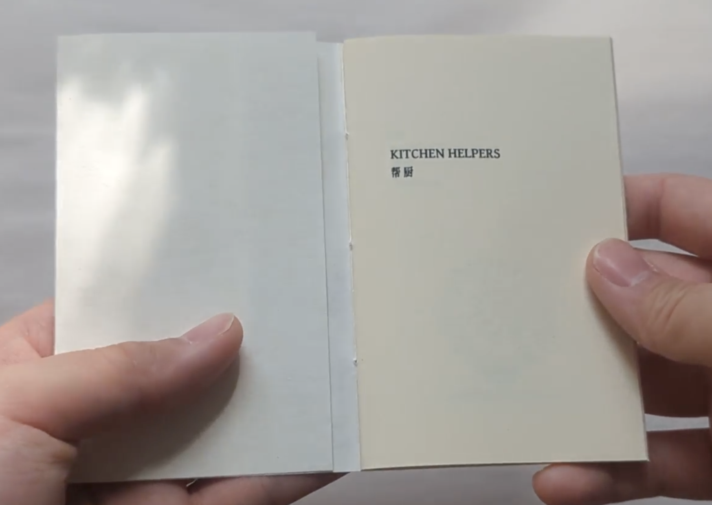
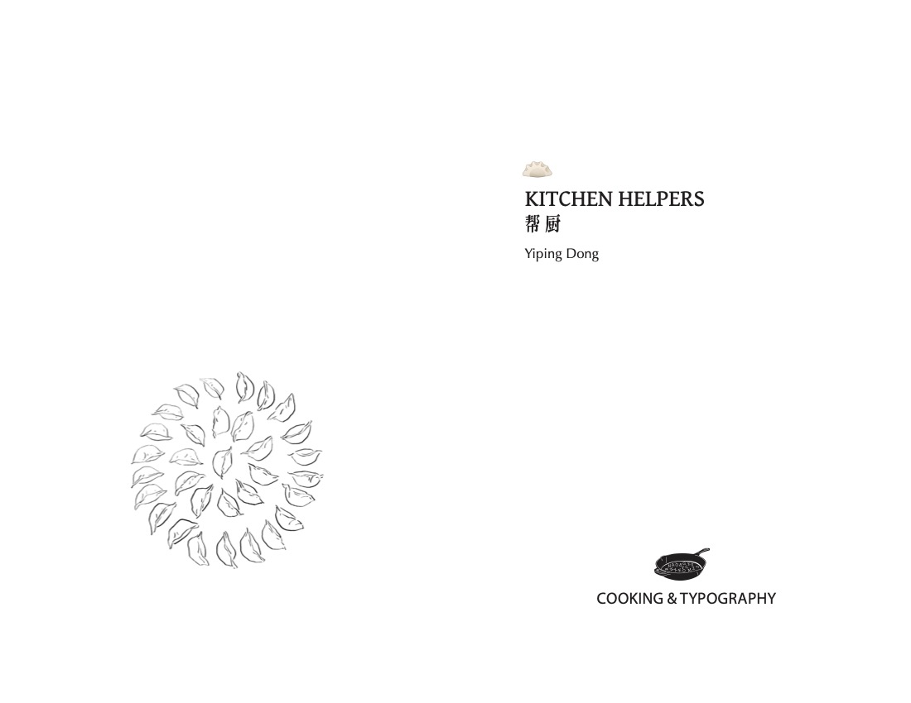
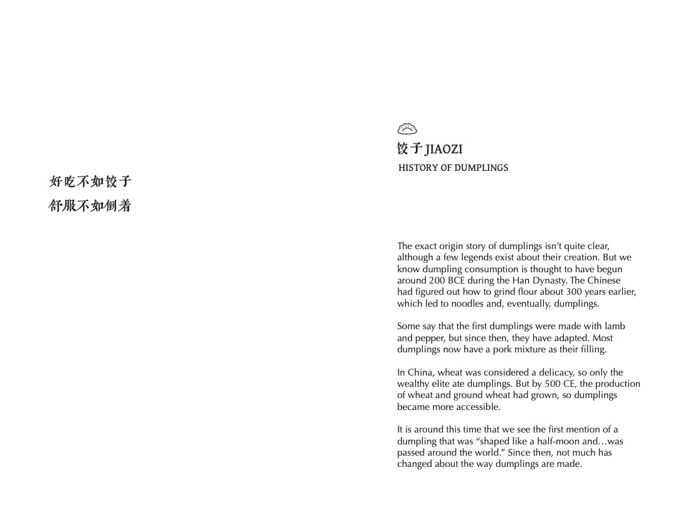
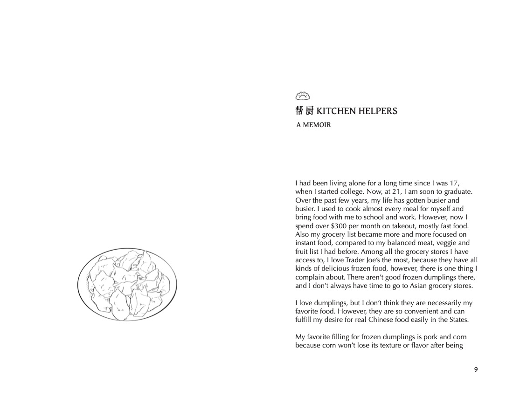
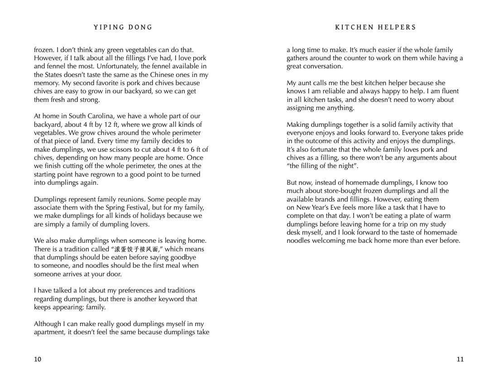
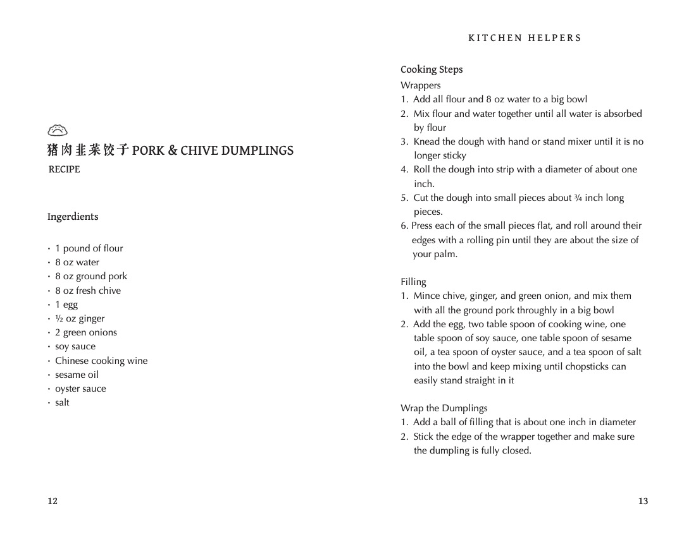
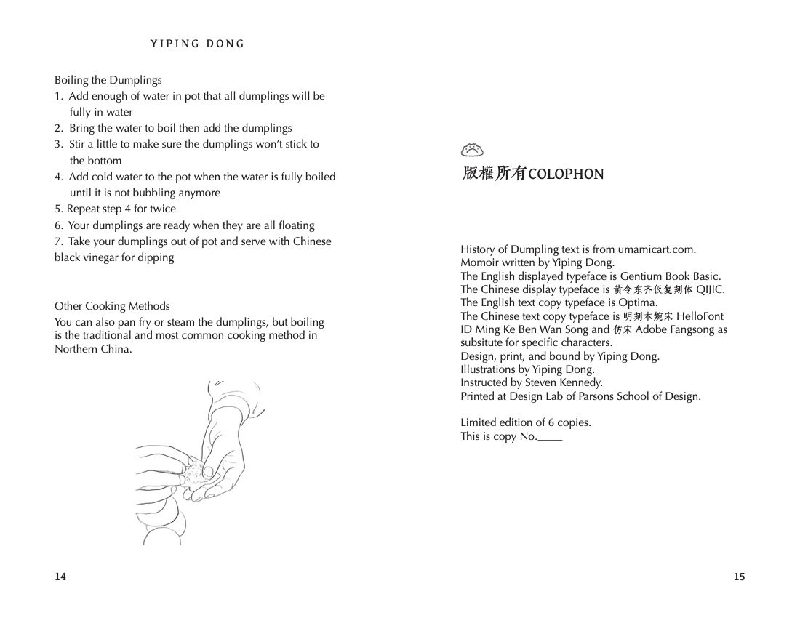

Kitchen Helpers
Undergrad
This is a 16-page miniature book, black and white only. The dimensions of the physical book are 4.25 in by 2.75 in.

Flip Through Video
This book includes a section on the history of dumplings, my memoir related to dumplings, and a recipe for dumplings.
The title Kitchen Helpers is the title of the memoir. My family really loves dumplings, and I am always one of the helpers when we make them. Every family member has their task when it comes to dumpling making. Every time my aunt yells, “time to make dumplings,” we all take our stations naturally and make dumplings together while talking and laughing. Being a kitchen helper when making dumplings is always one of the best family memories for me.





